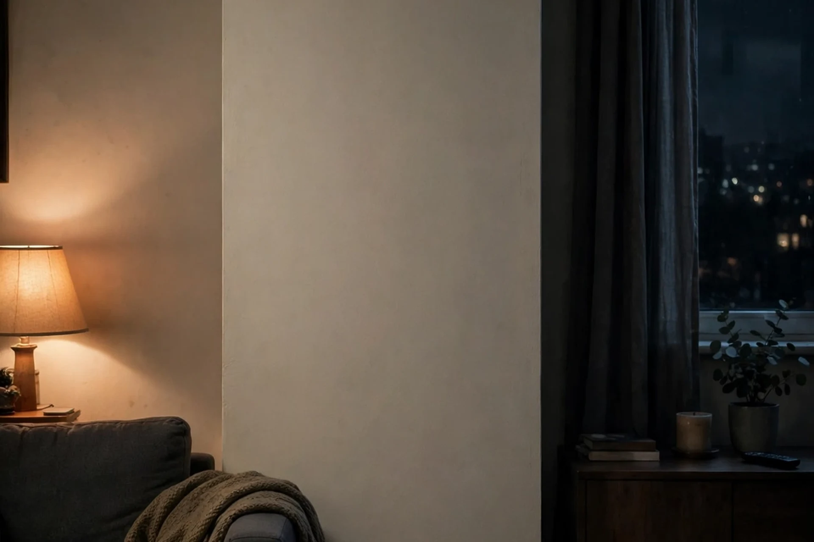

この記事の要点
- 電話やオンライン会議で話す声が、隣に聞こえていないか気になることはありませんか？
- 話し声は、壁を通るだけでなく、ドアや窓の隙間からも、漏れる場合があります。
- まず、声の大きさを意識してみてください。
⏱ 急いでいる人へ ― 今夜やること3つ
📖 目次
💡 まず知っておきたいこと：声は、隙間からも漏れます
話し声は、壁を通るだけでなく、ドアや窓の隙間からも、漏れる場合があります。オンライン会議や電話では、相手に聞こえるように、つい声が大きくなりやすい傾向があります。声の漏れを減らすには、声そのものの大きさと、部屋の隙間、話す場所の、3つから考えるのが筋道です。自分の部屋でマスキング音を流しても、自分の声の漏れは減りません。
🔊 声の伝わり方の仕組み
声が隣の部屋に届くとき、通り道は大きく分けて2つあります。壁そのものを通る道と、ドアや窓の隙間から、空気と一緒に漏れる道です。集合住宅の壁は、話し声の帯域をある程度は弱めてくれますが、隙間は素通りになりやすいため、「壁は厚いはずなのに声が聞こえる」という場合は、隙間側が主な通り道になっていることがあります。
話す場所と、壁との位置関係も影響します。壁に向かって近い場所で話すと、声がそのまま壁に届きやすく、壁の向こう側に伝わりやすくなる場合があります。反対に、壁から離れた場所で話すほうが、直接届く声の成分は減る傾向があります。
声の種類によっても、目立ち方は変わります。笑い声は、会話の合間に急に大きくなるため、静かな夜ほど際立ちます。高い声は、低い声に比べて隙間を通り抜けやすく、隣では「音量は小さいのに、よく通る」と感じられることがあります。逆に低い声は、壁や床を伝わる響きとして感じられる場合があります。
オンライン会議や通話の声も、仕組みは同じです。むしろ、相手の返事が聞こえない「片側だけの会話」は、聞く側にとって内容が推測しやすく、普通の会話以上に注意が向きやすいと言われます。相手の声をスピーカーで出している場合は、その音も同じように漏れる対象になります。
🗣️ 声の出し方と、話す場所
まず、声の大きさを意識してみてください。相手に聞こえるかどうかは、声の大きさだけでなく、マイクの距離や、通信ソフトの設定にも関わります。壁に向かって直接話すより、壁から少し離れた場所で話す、ドアや窓の近くを避ける、といった工夫は、無理なく続けやすい方法です。話す場所を、隣の部屋から離れた場所や、部屋の中心に近い場所に変えるだけでも、感じ方が変わる場合があります。夜遅くの会議では、時間帯の工夫も大切です。
家具の配置でも、できる工夫があります。本棚やタンスなどの大きな家具を、隣の部屋との間の壁際に置くと、壁に届く声を家具が遮る分、伝わり方が変わる場合があります。カーテンやラグ、布製のソファなど、柔らかい素材が多い部屋は、声の反響が落ち着き、結果として声を張りにくくなります。話す位置は、隣室側の壁から遠い側、できれば部屋の中心寄りを選ぶのが目安です。夜遅い会議や通話は、可能なら短めに区切る、声を使う場面を日中に寄せるなど、時間帯の調整も現実的な工夫です。
マイクと、通信ソフトの設定
マイクが口から遠いと、つい大きな声で話してしまう場合があります。口元に近いマイクや、ヘッドセットを使うと、声を控えめにしても、相手に届きやすくなります。通信ソフトのマイク感度や、ノイズを減らす設定は、相手に聞こえる声の大きさと、部屋の音の拾い方の、バランスを見ながら調整するのが無難です。設定の名前や場所は、使うソフトによって違います。会議の前に、自分の声の大きさを、録音などで確認してみるのも、1つの方法です。
💡 部屋の反響と、隙間の工夫
部屋の反響が大きいと、自分の声が大きく聞こえて、つい声を張ってしまう場合もあります。カーテンを閉める、布製品を増やす、といった反響を減らす工夫は、声の出し方を落ち着かせる助けになる場合があります。ドアの隙間が気になる場合は、隙間テープなどの、隙間をふさぐ工夫も、考えられます。ただし、隙間をふさぐだけでは、壁を通る音そのものは止まりません。換気についても、考える必要があります。
👨👩👧 子どもや来客など、避けられない場面
子どもの声や、来客との会話、家族の笑い声など、生活の中には「静かにしてほしい」と言えない場面もあります。子どもの声は高く、急に大きくなることも多いため、大人の会話以上に隣に届きやすい傾向があります。完全に防ぐことはできないので、「なくす」ではなく「時間帯と場所で調整する」という考え方が現実的です。
たとえば、にぎやかになる時間帯を夜遅くに避ける、遊ぶ場所を隣室から遠い部屋に寄せる、来客がある日は窓やドアを閉めておく、といった小さな調整です。それでも気になる場合は、普段の挨拶の中で「うるさかったら言ってください」と一声かけておくと、相手も伝えやすくなり、トラブルが大きくなる前に調整できることがあります。
🔁 苦情が来たときの入口
もし「声がうるさい」と言われたり、管理会社から連絡が来たりしたら、まず感情的にならず、事実を確認することが入口になります。いつ、どの時間帯に、どんな声が気になったのか。相手の困りごとを具体的に聞けると、「夜の会議の声」なのか「休日の来客の声」なのか、対策の的が絞れます。
言われた直後は、自分でも気づかなかった音量や時間帯に気づく機会でもあります。会議の時間帯を記録しておく、話す場所を変えてみるなど、試したことをメモしておくと、話し合いのときに「ここまで配慮している」と伝えやすくなります。対応の進め方は、苦情が来たときの対応のページにまとめています。自分だけでは解決が難しい場合は、管理会社への相談をご検討ください。
❓ よくある質問
- Q. ヘッドセットを使えば、声の漏れはなくなりますか？
- A. なくなるわけではありません。ただ、マイクが口元に近くなる分、小さい声でも相手に届きやすくなるため、結果として声の大きさを抑えやすくなります。漏れ対策というより、「声を張らなくて済む」ための工夫です。
- Q. 防音ブースや間仕切りは必要ですか？
- A. 状況によります。まずは話す場所・時間帯・マイクの工夫で様子を見て、それでも困る場合の選択肢です。賃貸住宅では設置や原状回復の条件もあるため、導入前に管理会社へ確認するのが無難です。
- Q. 自分の部屋でマスキング音を流せば、自分の声は漏れにくくなりますか？
- A. なりません。マスキング音は、聞く側の部屋で気になる音を紛らすためのもので、出す側の音漏れを減らすものではありません。自分の声が気になる場合は、このページの「場所・声の大きさ・隙間」の工夫が対象になります。
- Q. 夜のオンライン会議が多くて困っています
- A. 会議の時間帯そのものは変えられなくても、話す場所を隣室から遠ざける、声を使う発言を前半に寄せる、チャットで済む連絡は文字にするなど、声を出す量と場所の調整はできます。相手先の都合もあるため、できる範囲の工夫として考えてください。
⚠️ 注意
このページの内容は、法律の判断や、音響工事の専門的なアドバイスではありません。声の漏れを完全になくすことはできません。目安として、無理のない範囲で試してみてください。近隣とのトラブルについては、管理会社への相談をご検討ください。